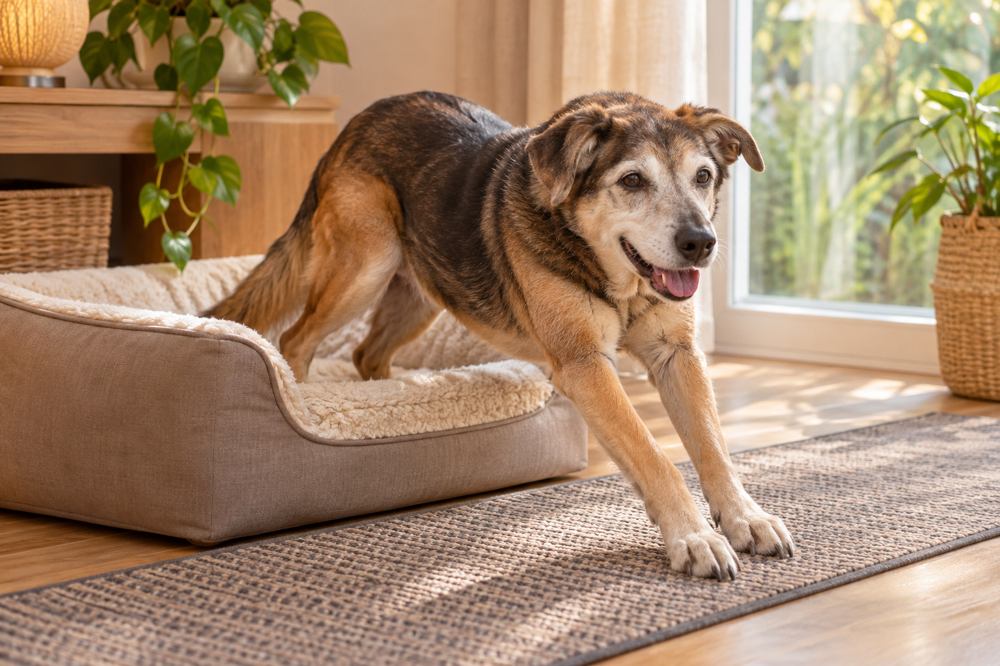

PRODUCTOS PARA PERROS ADULTOS
Más bienestar,
a su ritmo.
Una selección clara para ayudarle a descansar, moverse y cuidarse mejor.
✳El confort también
está en los detalles
está en los detalles
☼ Su ritmo, siempre
♡ Acerca el hueso
SELECCIÓN PARA SU DÍA A DÍAProductos que pueden
Productos que pueden
hacer la vida más fácil.
Descubre camas, ayudas de movilidad, suplementos e higiene para distintas necesidades.
Selección inicial, no consejo veterinario. Confirma en Amazon la variante, talla, vendedor y disponibilidad. Los suplementos y las ayudas de movilidad deben elegirse según las necesidades del perro.
Enlaces de afiliado: Vida Perruna puede recibir una comisión por compras que cumplan los requisitos aplicables, sin coste adicional para ti. Ciertos contenidos de esta web proceden de Amazon y pueden cambiar o retirarse. Los precios y la disponibilidad son válidos en la fecha y hora indicadas; al comprar se aplicará lo que muestre Amazon.
LECTURAS PARA ACOMPAÑARLE
Ver todos los artículos ↗Últimas del blog
